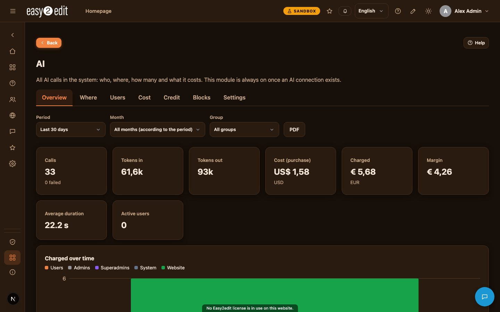
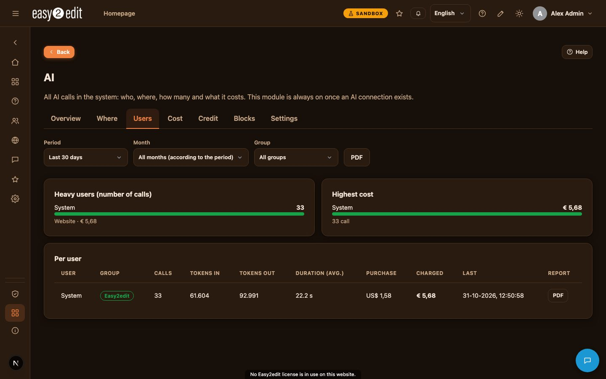
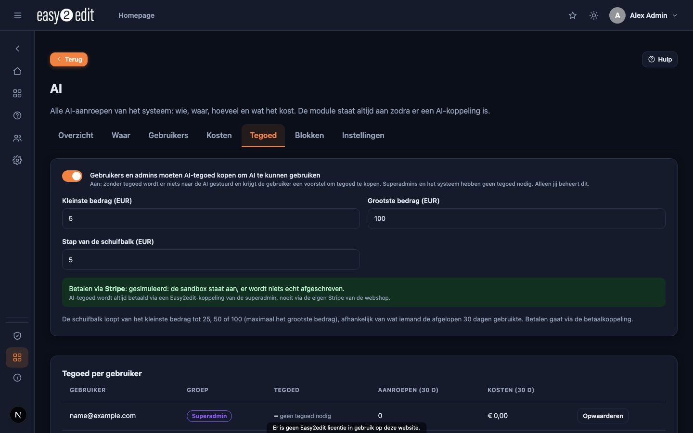
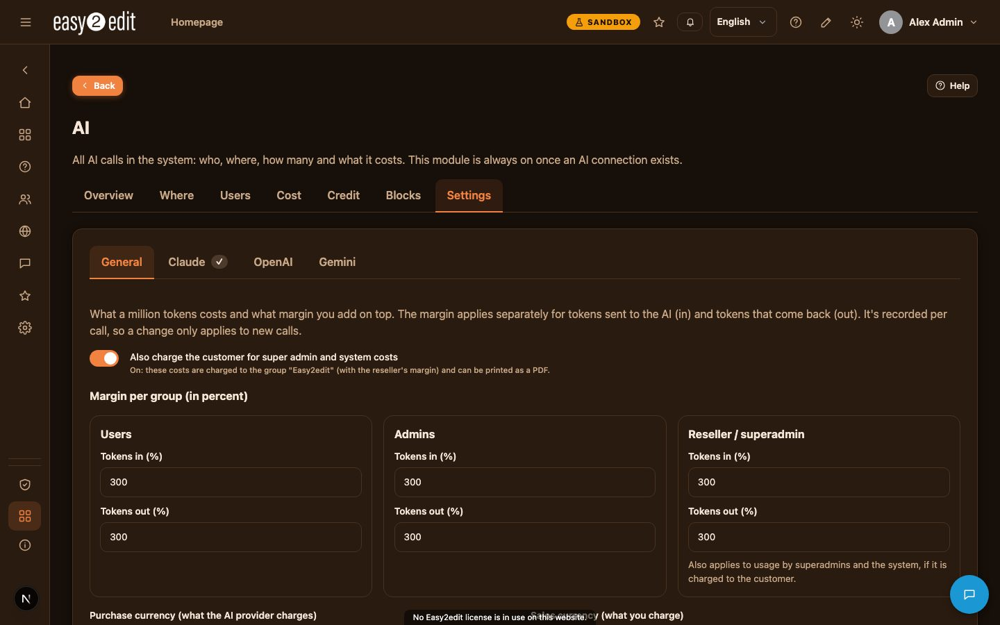
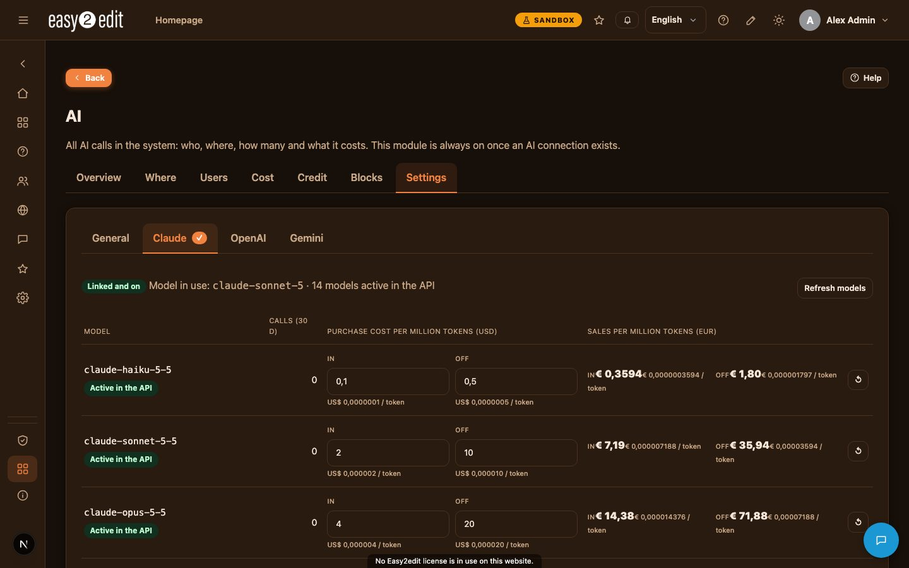
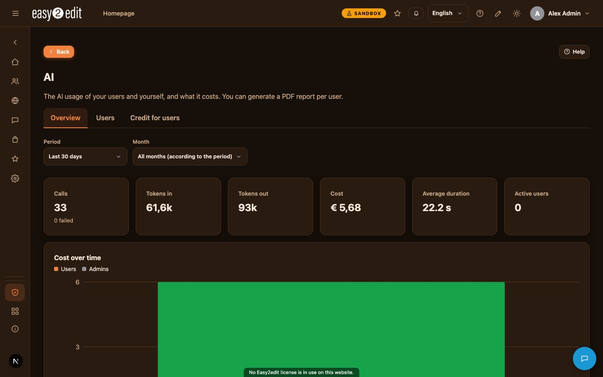
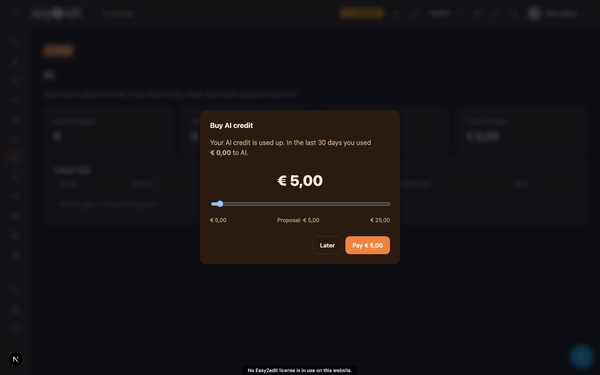

10. AI and AI credit
easy2edit uses artificial intelligence (Claude, by Anthropic) throughout the system to help with tasks such as translating content, writing page texts, importing websites, researching prices and more. Every single call made to the AI is logged in detail, so that usage and costs stay fully transparent and controllable.
Video: AI and AI credit (English voice-over also in Nederlands)

What gets monitored#
For every AI call, the system records:
- Who made the request (a user, an admin, a superadmin, or the system itself)
- From which part of the system the call came
- Which AI model was used
- The number of tokens sent and received
- How long the call took
- Whether it succeeded
- What it cost
This information feeds the AI dashboard, which gives superadmins full insight into usage patterns and spending.

The AI module and AI links#
The AI module is a core module. It switches on automatically as soon as an AI link (an API key) is installed and enabled under Admin > API keys.
A link can be marked as a Superadmin link. When this is done, only superadmins can see or change it. This is used, for example, for the easy2edit AI link and the Stripe link of the reseller.
AI calls made by users and admins always run on an easy2edit link belonging to the superadmin, whenever one is available.

The Super admin AI dashboard#
Super admin > AI gives superadmins a full dashboard with the following tabs:
- Overview: key figures, cost over time per group, share of cost per group, and the last calls made
- Where: where AI is used most, what costs most, which tasks and models are involved, and busy hours and weekdays
- Users: heavy users, highest costs, and a table per user with a PDF button on each row
- Costs: costs broken down per month or week, per group and per user
- Credit: management of AI credit
- Blocks: dashboard blocks that can be placed on pages
- Settings: pricing, margins and related configuration
The dashboard can be filtered by period, by month (the current month plus the previous twelve), and by group. The PDF button produces a summary report, or, when 'Detailed' is selected, a complete list of every call including tokens in and out, duration and costs.

Costs, prices and margins#
Superadmins manage purchase prices per million tokens for each model, organised in tabs for Claude, OpenAI and Gemini, showing only the models currently active in the API. The 'Refresh models' button also looks up current prices directly from the AI provider.
Purchase prices are set in the purchase currency (for example USD), while sale prices are set in the selling currency (for example EUR), using an exchange rate that can be updated with a button that consults the AI.
Three separate margins can be set, each expressed as a percentage, and each split into tokens in and tokens out:
- Users
- Admins
- Reseller/superadmin
A switch determines whether usage by superadmins and the system is also charged to the customer. When switched on, this usage is booked to a group named after the website, using the reseller margin. When switched off, it is treated as a cost to the reseller with no margin applied, and shown separately.
Prices, exchange rate and margins are stored with each individual call, so later changes to settings only affect new calls, never past ones.
Only superadmins can change these system-wide AI settings.

AI credit#
By default, users and admins must purchase AI credit before they can use AI features. This requirement is a switch that is on by default. Superadmins and the system itself never need credit.
Before every AI call, the system estimates its cost and checks it against the available credit. If there is not enough credit, nothing is sent, and a message explains what is needed.
After the call completes, the actual cost is deducted from the credit balance.
When a user's credit runs low, a pop-up appears with a slider. The minimum step is based on actual use over the last 30 days (25, 50 or 100), along with a suggested amount.
Payment always goes through Stripe, using an easy2edit link belonging to the superadmin. The website's own Stripe shop is never used for this. Credit is added once payment is confirmed, which happens when the customer returns from the payment page and again when the AI screen is opened.
Superadmins set the available top-up amounts and can manually add or deduct credit for any user, via Super admin > AI > Credit.
Every admin sees a welcome pop-up at their first login, explaining how AI and AI credit work.
On a computer where the sandbox mode is switched on, AI credit is never paid for with a real payment. Instead, a simulated payment page is used.
Each standard installation has an AI tab showing:
- Whether AI is available for this installation
- Whether credit is required
- The smallest and largest top-up amounts allowed

What admins can see and manage#
Admin > AI shows usage by users and admins for that installation. It does not show purchase prices, margins, or reseller costs. The Admin start page also includes an 'AI use' block showing the admin's own credit balance.
This area includes a table per user and a PDF report per user, without purchase prices.
To see this information, an admin needs the right 'View AI use of users', assigned via Roles.

Admins with their own AI and Stripe links#
An admin who has configured their own AI link (Anthropic) and their own Stripe link, neither marked as a superadmin link, can switch on their own credit system for their users via Admin > AI > Credit for users.
In that case:
- Their users use the admin's own AI link
- Payments go through the admin's own Stripe account
- The margin belongs to the admin
The admin sets the credit rules, the top-up amounts, and the margin, and can add credit to individual users as needed.
AI blocks on pages#
Several parts of the AI dashboard can be turned into reusable blocks: key figures, cost over time, usage per group, where AI is used, heavy users, highest costs, models, and busy hours.
These blocks are switched on as system objects via Super admin > AI > Blocks, and can then be placed on any page while in edit mode. Only superadmins can see the figures shown in these blocks.